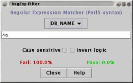

The RegExp Filter uses pattern matching (Perl 5 regular expressions) against the text associated with each spot.
The filter can be applied to any combination of the Spot, Probe or Gene names, and to the Annotation associated with either Gene or Probe names.
At the bottom of the window the percentage of Spots which are trapped by the filter is shown in red and the percentage of Spots which are not trapped is shown in green. Note that the percentages only reflect the filtering that is done by this filter, and do not take into account any filtering being done by other filter plugins that are also active.
As with all filter plugins, closing the plugin's window deactives the filter (but iconifying it does not).

Enter the regular expression into the type-in field and select which text to match it against using the checkboxes.
By default, matching is not case sensitive, but this can be changed using the "Case sensitive" checkbox under the type-in field.
The "Invert logic" option swaps the sense of the pattern matching - things that previously matched are not matched and vice versa.
The RegExp Filter uses a package called ORO-Matcher available from http://www.oroinc.com/. ORO-Matcher is an implementation of Perl 5 regular expression matching that is freely available (but comes without source code). A version of this package is included with maxdView, and should be automatically located. If not, use the file browser to navigate to the "external/OROMatcher-1.1.0/" directory.
(this is not intended to be a complete description of Perl 5 regexp syntax, for more details see any good Perl documentation.)
string : filter
boolean : case_sensitive
boolean : gene_names
boolean : probe_name
boolean : spot_name
boolean : annotation
string : filter
boolean : case_sensitive
boolean : gene_names
boolean : probe_name
boolean : spot_name
boolean : annotation